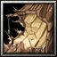
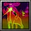

加藤段藏，出生於文龜3年(1503年)，卒於本祿12年(1569年)，是日本戰國時代的忍者。本名為加當段藏，有出身自常陸的說法，詳細情形不可考。 為忍術高超的忍者，最初侍奉上杉謙信。曾經有一次，受謙信的命令前往敵方大名家奪取寶劍，段藏不只奪取了寶劍，還將服侍此大名的童女也活捉後獻給了謙信， 自從這事件後，謙信對他相當驚恐且警戒，開始疏離他，於是他離開了上杉家，轉而投效武田信玄。據傳說因為段藏私底下串通織田信長，信玄遂在1569年時， 趁他如廁時命令馬場信房(和土屋昌次)將其暗殺。 敏捷型近戰英雄
法術 ：Ａ 輔助 ：Ｄ 最擅長一對多人，破塔 敏捷：31+2.80（主要） 智慧：20+2.00 
Ｄ[被動] 忍法‧空禪之術 有5%機率閃避攻擊。 死亡時會變成木頭：防禦力降低6點。以木頭的形體存在16秒而沒被破壞，便可以復活。但是必須花費800點法力，法力低於800點以內死亡，將不啟動空蟬之術。 消耗法力800 Ｗ[主動] 忍法‧雲隱之術
造成附近350區域敵人[50/100/150/200]點傷害並緩慢攻擊及移動速度[10/20/30/40]%， 持續3秒。接著能夠隱形，並讓移動速度提昇25%並持續[10/15/20/25]秒。 如果攻擊的話，隱形術即告失效，第一擊會造成[100/160/220/280]點額外傷害。 消耗法力[120/140/160/180]，等待 時間14秒 
Ｅ[主動] 忍法‧千鳥造成目標[50/80/110/140]點傷害並且暈眩1秒，接著目標將受到3次攻擊， 每次攻擊造成目標及附近300區域敵人[50/80/110/140]點傷害並且暈眩0.4秒。 消耗法力[140/160/180/200]，等待 時間25秒 Ｒ[主動] 忍法‧紅蓮之術 在前方創造一面火焰牆，火焰牆每0.5秒對經過的敵人造成90點魔法傷害， 持續[4/8/12/16]秒。對建築物傷害只有15點。 消耗法力[50/100/150/200]，等待時 間[22]秒 Ｔ[被動] 飛鳶加藤 成為的鳶之一族的上忍，能增加[30/40/60]點敏捷。 |